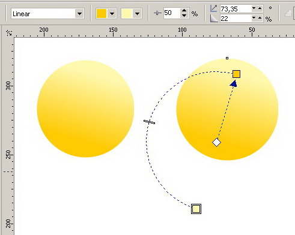

Сбор ошибок CorelDRAW версии 15.2.0.661
Sancho / 22.02.2010, 17:36/00:41
Форум:
Если вы нашли ошибку в CorelDRAW X5, расскажите о ней в этой теме, и если она подтвердится, то я обязательно сообщу о ней разработчикам.
Правила:
1. Обязательно указать операционную систему (XP, Vista, 7...).
2. Расписать поэтапно, как повторить ошибку.
Да, кстати, само окошко обджект менеджера "прозрачное", и когда начинают "пропадать" слои и объекты, в этом окошке часто начинает появляться то, что под окном корела - элементы на рабочем столе, открытые папки, другие программы и т.д. Смена режима просмотра (wireframe-enchanced) не помогает, как и свертывание-развертывание окна корела. Реже в окне обджект менеджера начинает отображаться, например, содержимое поверклипа который не "под" окном, или растровая картинка, которая отображается не цветной, а серой, как в режиме wireframe.
Возможно, существует какая-то несовместимость-глючность Корела с конкретными дровами в системе или железом. Не исключено, хотя и маловероятно, глюк появляется на системах, где после 15-го Корела ставились более ранние версии (у меня на работе девятка).
На работе Win XP SP3. Corel 15.2.0.661
Может разрабы услышат просьбу(при помощи Санчо) -- ведь правда неудобно такое количество кнопок...
PS. Сорри, если нанёс неизгладимую обиду кнопке "Хелп"
Добавлено (09.12.2010, 12:05)
---------------------------------------------
Не знаю, обращалось ли кем раньше внимание на не совсем корректную работу корела с 5-красочными (смук+пантон) растровыми файлами?
Глюк в следующем. Делаю файл "А", вставляю в него 5-красочный psd cmyk+pantone solid coated (psd сделан в Photoshope CS3). Таким же макаром делаю файл "Б". Создаю файл "С", копирую в него через буфер растры из файлов А и Б. Все сохраняю и закрываю. Снова открываю корел и файл С. Сразу отмечу, что пантон выглядит заметно по-другому, не так насыщенно. Затем рисую прямоугольник и задаю ему пантон того же номера, но не из палитры документов, а из палитры корела. Посылаю на печать - 2 пантона под одним названием!
Про то, что твориться в палитре документов вообще описать внятно не могу. Там полный бред.
Добавлено (09.12.2010, 13:20)
---------------------------------------------
Если ставить обтравленный (т.е. на прозрачной основе) смук-psd поверх пантонной плашки, то при создании композитного ps и последующей дистилляции в pdf вокруг границы обтравки растрового объекта создается "смук-треппинг" толщиной около 0,2 мм по цвету близкий к пантону (по выбору корела), в чем нет необходимости, поскольку этот "треппинг" не идет с наложением на пантон. Да и сам пдф такой, открывая в люстре испугаетесь. Свои пятикрасочные растры корел создавать не умеет. Выход пока единственный - отписывать сепарированный пс, дистиллировать в пдф ("треппинга" не образуется) и открывать его в шопе. Затем вручную подрисовывать где надо треппинг, хотите пантон, хотите смук, и такие псд вставлять снова в корел, но лучше сразу в индиз по причинам описанным выше.
Добавлено (09.12.2010, 14:45)
---------------------------------------------
Если без копирования через буфер сразу в файл С накидывать 5-красочный псд-шники, рисовать плашки с тем же пантоном, то в печать пойдет один пантон. Но! Такой композитный пдф почему-то не рипуется ни у нас в издательстве на фотофыводе, ни в типографиях на стп. Коллега по работе поступает так: этот композитный пдф из корела засовывает в индиз, из индиза снова пишет композитный пс и т.д. Тогда, по его словам, всё нормально.

Попытка подвигать это чудо приводит к вылету корела. Присутствует также и в X4, разве что X4 не вылетает.
Лицензионный x4,x5. Проверено на WinXp x86 и Win 7 x64.
Страницы